Stores, transfers, efficiency and resources, one figure at a time.
Energy is the accounting system of physics. Nothing is created and nothing is destroyed, so every question in this topic comes down to the same move: name the store the energy was in, name the store it ended up in, and work out how much made the trip. This page walks P1 in that order, from a single push through to how a country powers itself. Read it top to bottom the first time, then use the jump links to find the one figure you have forgotten.
These figures come from an American textbook, so they say potential energy where AQA says gravitational potential energy store, and nonconservative force where AQA says dissipation. The physics is identical. The resource data in the last section is from 2006 and 2011, so treat the shape of the pie as the lesson and not the numbers.
A system is an object or group of objects. When a system changes, there are changes in the way energy is stored within it. Everything else in this topic is a special case of that one sentence.
A system, and what changes inside itStart here. The line drawn round each picture is the system. On the left, the rock's gravitational store empties into an elastic store, then into a kinetic store, and back again with no net change to the total energy: this is a closed system. On the right, the same fall ends in a thud, and the energy is dissipated to thermal and sound stores in the ground. Nothing has been destroyed in either case. In the second, it has simply been stored in less useful ways.
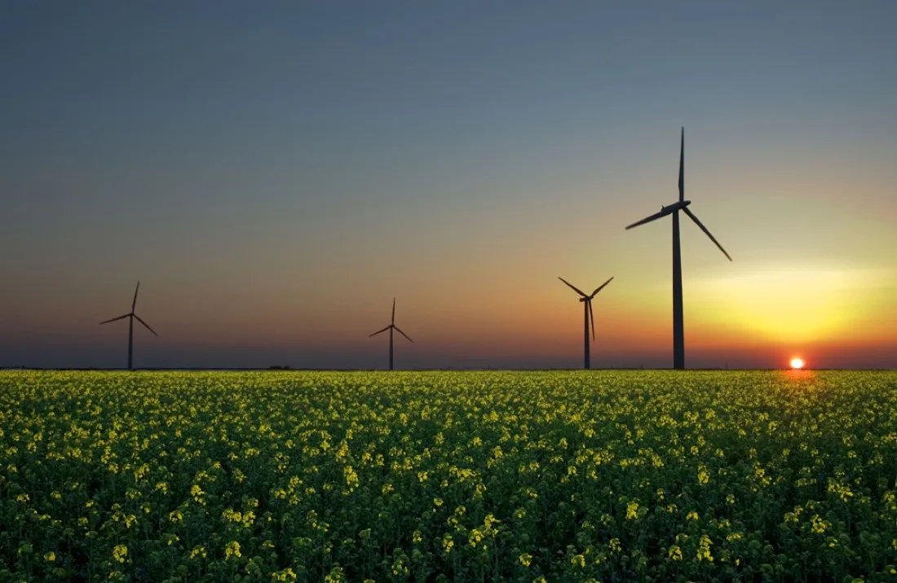
Naming the stores in a real systemBefore any equation, practise the naming. Here there is a kinetic store in the moving air and the turning blades, a gravitational store in the raised blades, and energy transferred away electrically down the cables. Deciding where the system ends is your choice, and it changes the answer. Credit: Jürgen from Sandesneben, Germany, via Wikimedia Commons.
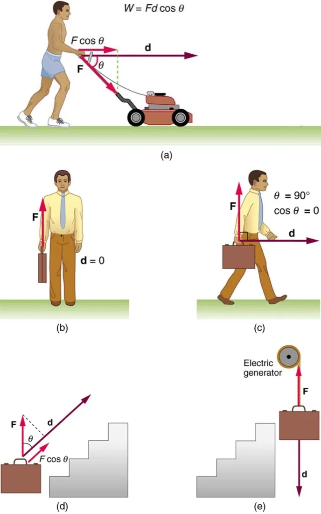
Changing a system by work done by forcesThe specification lists three ways to change a system: heating it, doing work with a force, and doing work when a current flows. This is the middle one. Push the mower and it moves, so work is done and energy is transferred. Carry the briefcase along a level path and the force is vertical while the motion is horizontal, so no work is done on it at all.
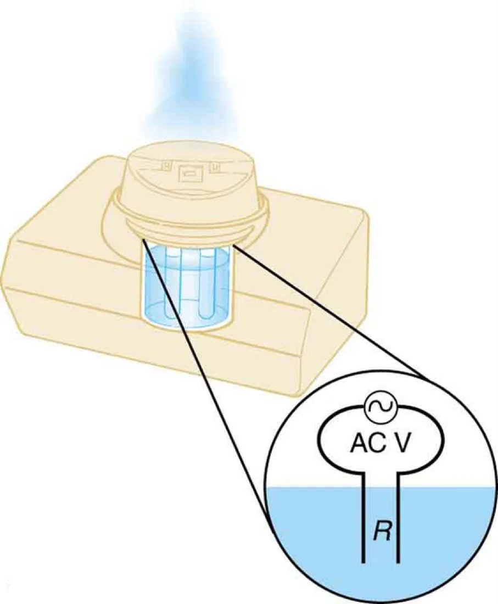
Changing a system by work done when a current flowsThe third of the specification's three routes, and very nearly its own worked example: the water itself is the resistance, so charge doing work against it fills the thermal store directly. This is the electric kettle from the specification, opened up. The third route, heating, is section 3. OpenStax, CC BY 4.0
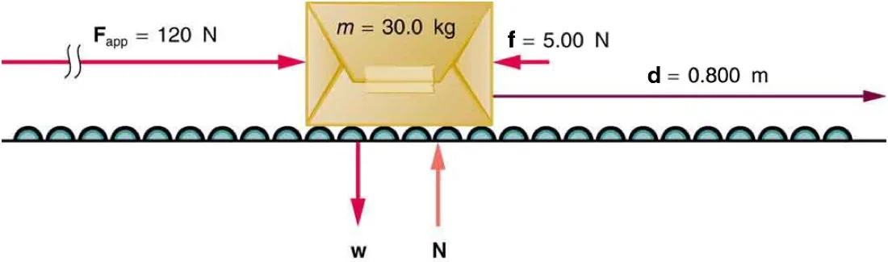
An object accelerated by a constant forceOne of the common situations you are asked to describe by name. The force does work on the package, and the energy transferred fills its kinetic store. Strip away the scenery and almost every calculation in this topic is this picture.
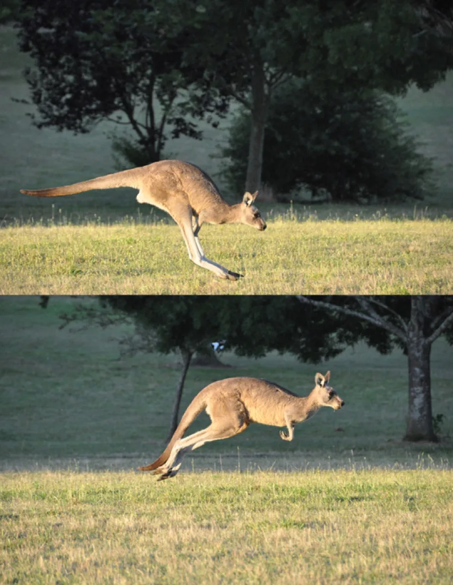
A moving object hitting an obstacleAnother named situation. The ground pushes up while the kangaroo moves down, so the kinetic store empties. Bending the legs makes the stopping distance longer, which reduces the force needed. Vehicle stopping distances in P5 are this same argument.
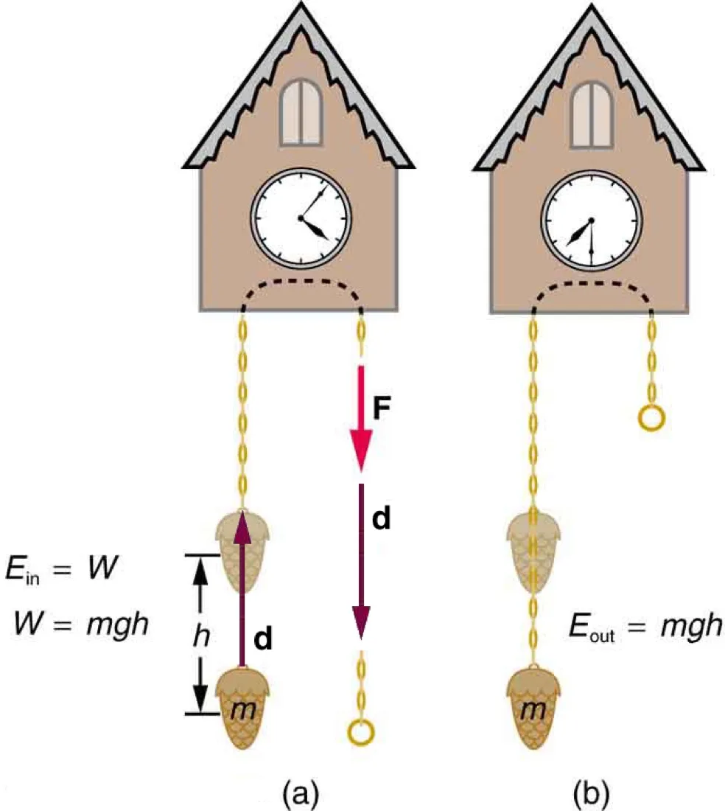
Filling a store, then spending itWork done raising the mass fills a gravitational store, and that store belongs to the mass and the Earth together rather than to the mass alone. Release it and the store empties, doing work on the nail. Follow it round and the accounting balances at every stage.
Three stores carry nearly every mark at GCSE: kinetic, gravitational potential and elastic potential. Each has an equation, and each equation counts the work that went in.
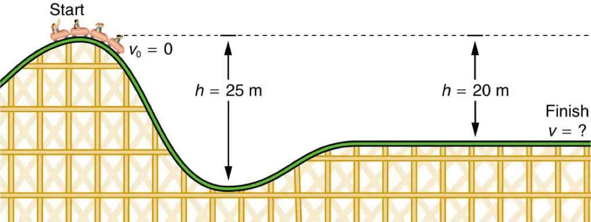
Gravitational store to kinetic storeThe gravitational store falls, the kinetic store fills, and in a closed system the total does not change. Assume no dissipation and you can find the speed at the bottom without knowing anything about the shape of the track. That is what makes this such a powerful method.
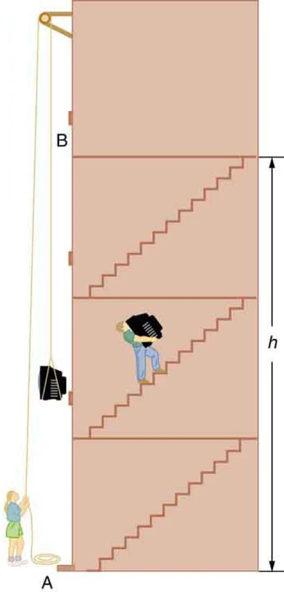
Only the change in height mattersStraight up, up a ramp, or by a wandering route, the gravitational store gains the same mgh. Because g is given to you in the exam, these questions come down to reading the mass and the height change correctly.
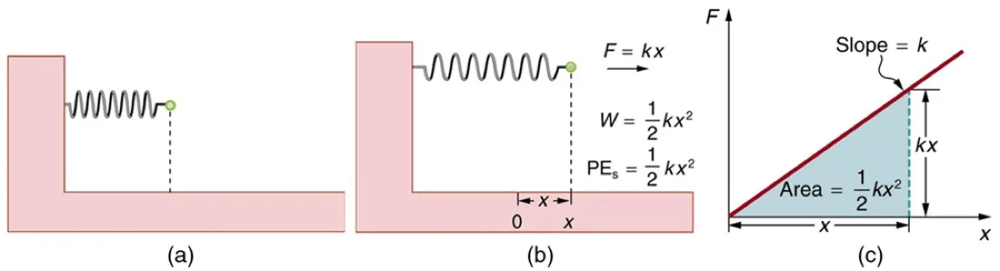
The elastic potential energy storeAn undeformed spring stores nothing. Stretch or compress it, up to the limit of proportionality, and the energy stored grows with the square of the extension. Double the stretch and you store four times as much. This equation is given on the equation sheet.
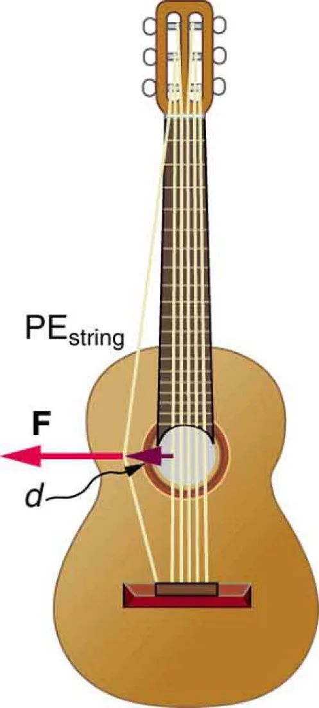
The elastic store, releasedPulling the string aside does work against its tension and fills an elastic store. Let go and that store empties into a kinetic store, and then into sound. Three stores inside a second.
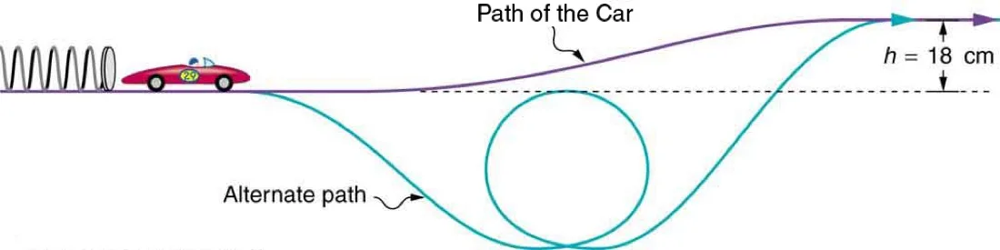
One transfer, then anotherElastic store to kinetic store to gravitational store, in a single diagram. Assume no dissipation and the energy in the compressed spring fixes the height reached, so you can work backwards from the height to the spring. This is the standard shape of an exam question.
Heating is the third way to change a system. How much the temperature rises depends on three things, and the specific heat capacity is the one that belongs to the substance.
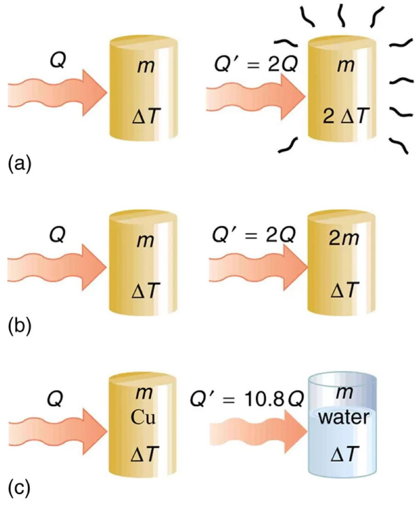
What the temperature rise depends onRead it as the equation in three parts. Double the temperature change and you need twice the energy. Double the mass and you need twice the energy. Change the substance and everything changes, because the same mass of water needs about eleven times what copper needs for the same rise. That third panel is specific heat capacity: the energy to raise one kilogram by one degree. OpenStax, CC BY 4.0
Power is the rate at which energy is transferred, or the rate at which work is done. An energy transfer of one joule per second is a power of one watt.
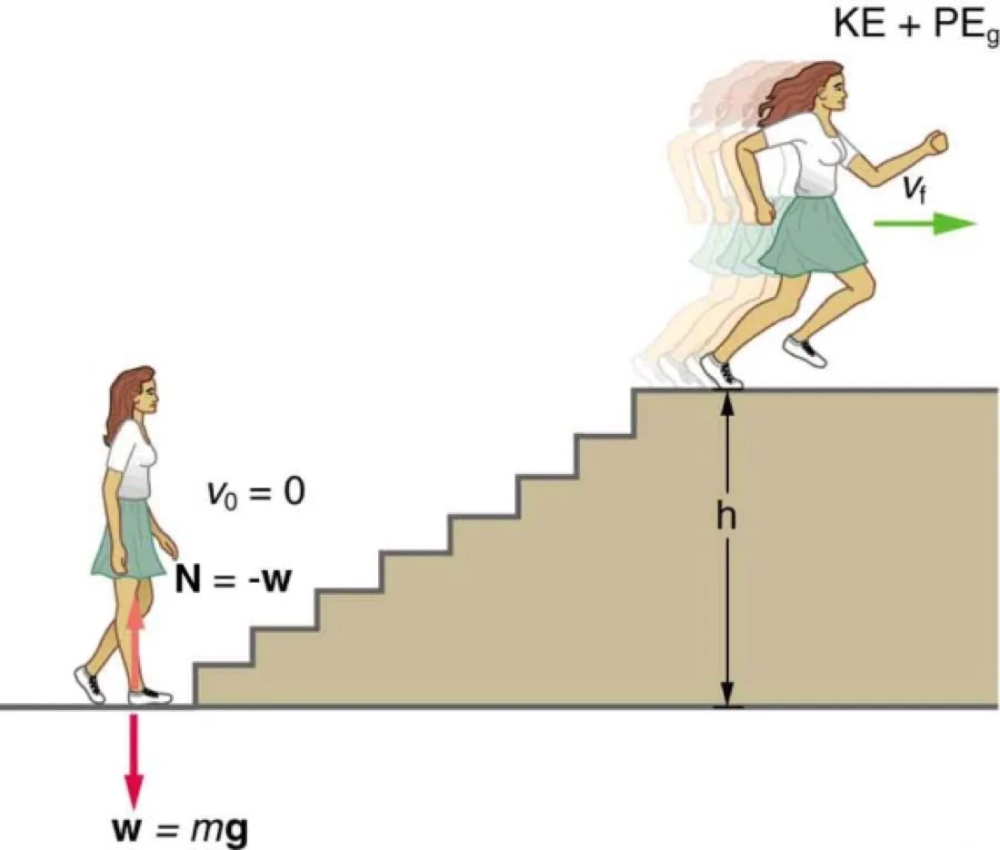
Same work done, different powerThis is the comparison the specification asks you to be able to make. Walking up and sprinting up fill the gravitational store by exactly the same amount, so the work done is identical. Only the time differs, so only the power differs. Chemical store to kinetic and gravitational stores, at a rate you choose.A very large transfer, in very little timePower is not the size of the transfer on its own. A great many joules divided by a very few seconds is what produces a number this extreme, which is why the same energy released slowly would be unremarkable. Credit: NASA.
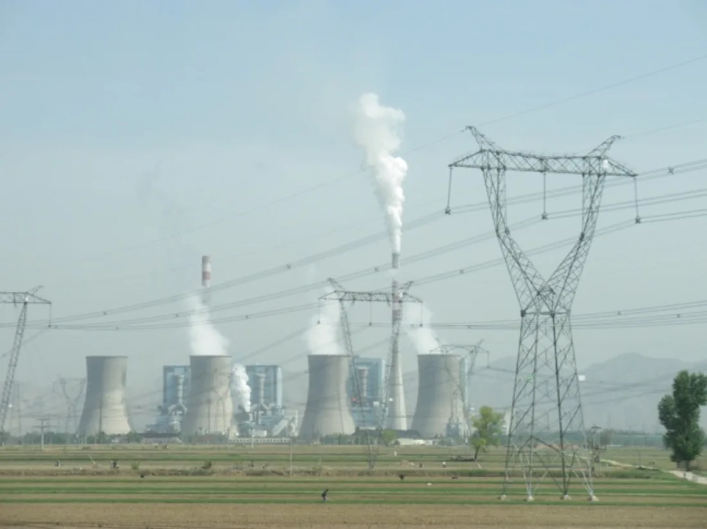
Power measured in gigawattsA station is rated by a rate, not an amount. Notice how much is leaving through the towers: even here, most of the energy in the chemical store of the coal is dissipated to thermal stores in the surroundings rather than reaching a plug.
Energy can be transferred usefully, stored, or dissipated, but it cannot be created or destroyed. Dissipated energy is not gone. It is stored in less useful ways, which is what the word wasted means.
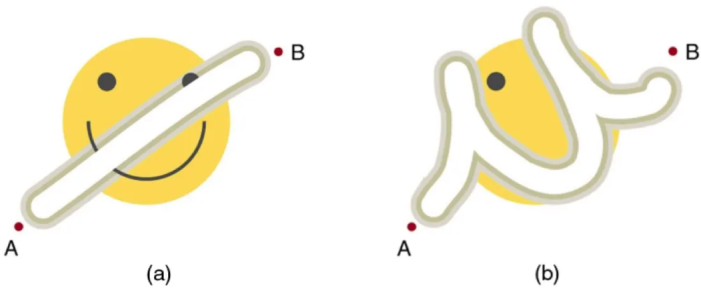
Friction dissipates more the further you goCompare this with the gravitational figure in section 2, where the route made no difference at all. Here it makes every difference: the longer the path, the more is rubbed away and the more energy is dissipated to thermal stores. That is precisely why it cannot be recovered.
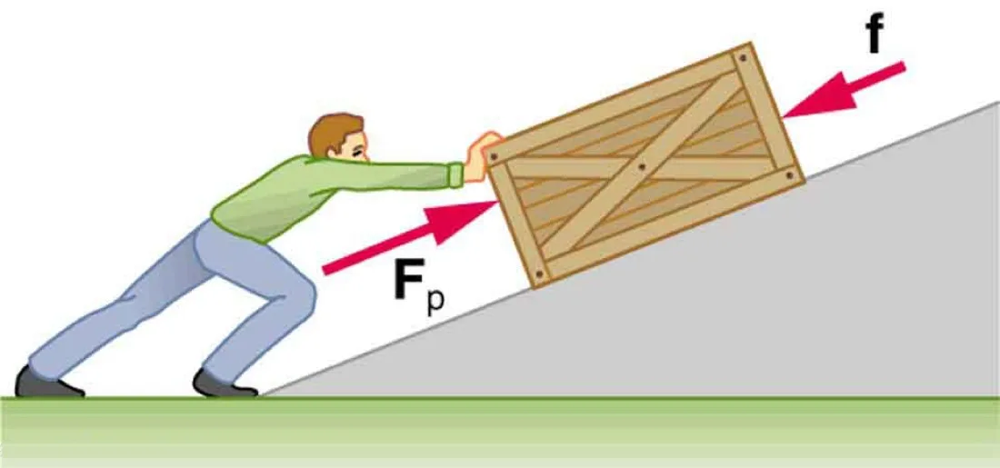
Splitting the input into useful and wastedSome of the work done raises the crate and fills a gravitational store you could get back. The rest is dissipated, warming the ramp and the crate. Reducing unwanted transfers here means lubrication, and that split between useful and wasted is exactly what the efficiency calculation asks for.
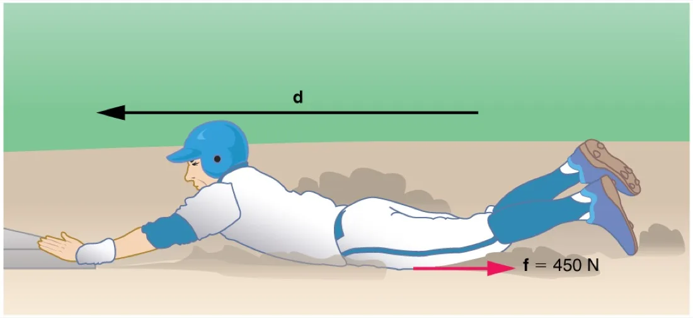
A kinetic store emptied entirely into thermal storesNothing useful fills up. The ground and the clothing end up very slightly warmer, spread through an enormous amount of matter. The energy is all still there and none of it can be gathered back, which is the whole idea of dissipation.
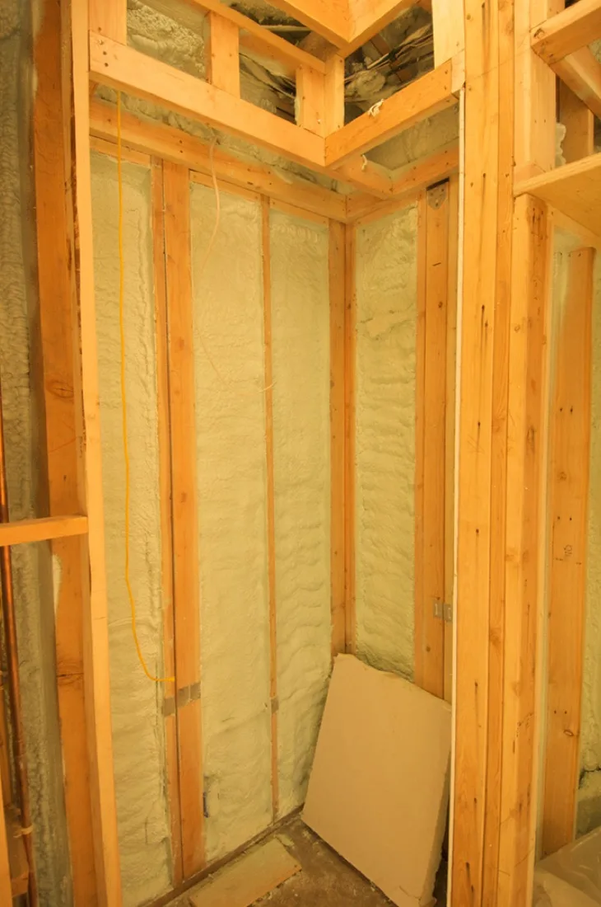
Reducing an unwanted transferThe specification asks you to explain ways of reducing unwanted energy transfers, and names two: lubrication and thermal insulation. This is the second. The foam works because it traps air, and trapped air is a poor conductor. OpenStax, CC BY 4.0
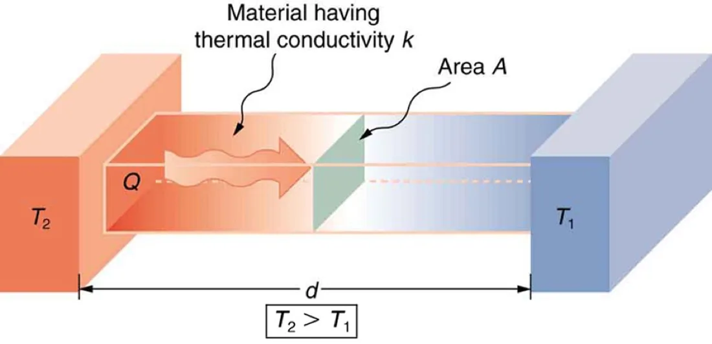
Conductivity and thicknessTwo statements in one diagram. The higher the thermal conductivity of the material, the faster energy is transferred across it. The greater the thickness d, the slower. You are not asked to define thermal conductivity, only to use it this way. OpenStax, CC BY 4.0
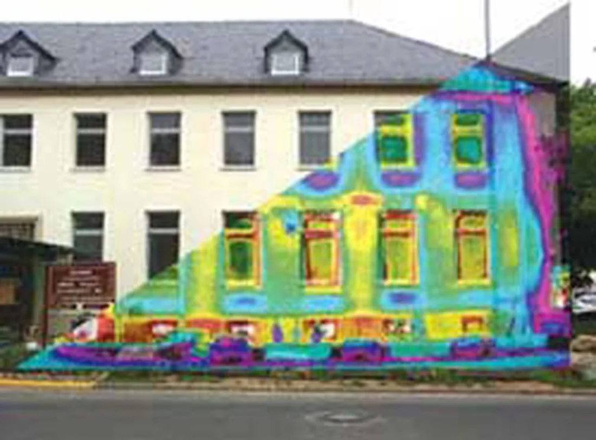
The rate of cooling of a building, made visibleThe overlay puts the specification statement on screen: the rate at which a building cools depends on the thickness and the conductivity of its walls. The yellow and red are where both are working against you. Windows and doors lose fastest, which is exactly where the money goes on insulation. OpenStax, CC BY 4.0
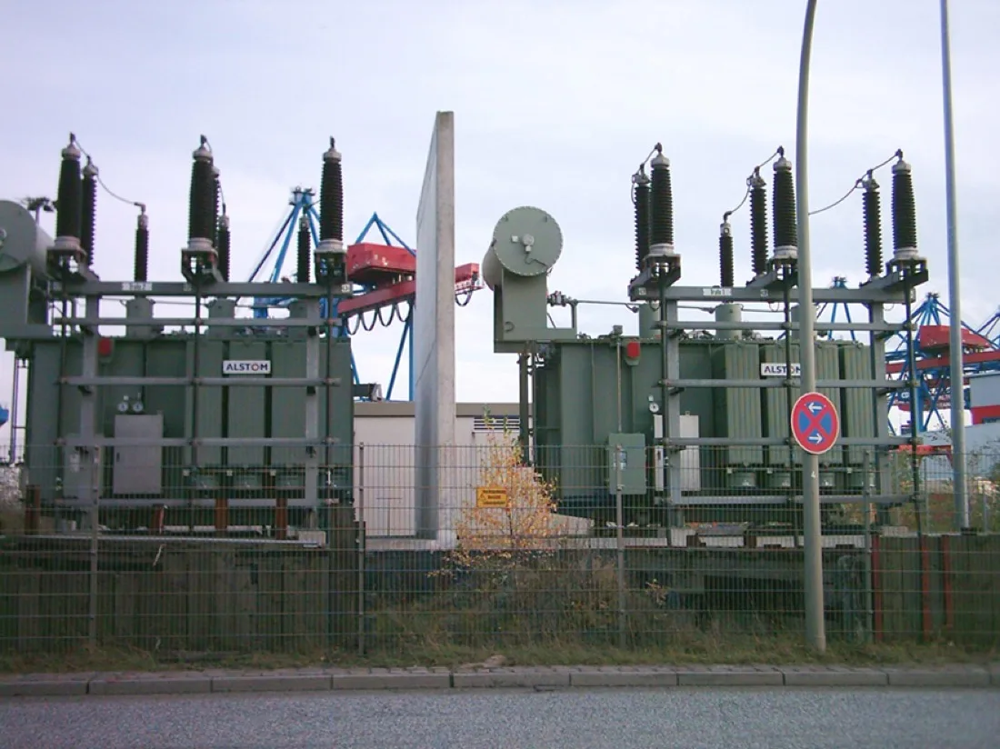
Dissipation, and the trick used to beat itCurrent flowing through a transmission line dissipates energy to thermal stores all the way along it. Transformers like these raise the voltage, which lowers the current for the same power, and less current means far less wasted. It is the same reasoning as lubricating a bearing, applied to a country. OpenStax, CC BY 4.0
The last part of P1 asks you to compare resources: renewable against non-renewable, how each is used, which are reliable, and what their use costs the environment.
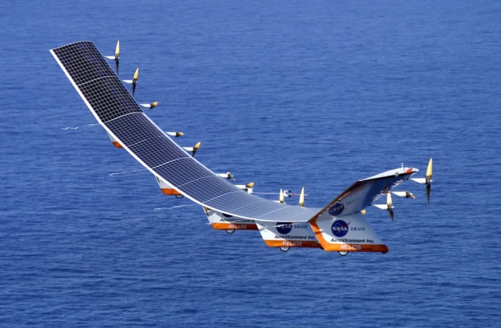
The Sun, used for transportRenewable, and it produces no emissions in use. The wing area needed to fly one very light aircraft tells you the weakness straight away, which is a good habit: name the use, then name the limit.
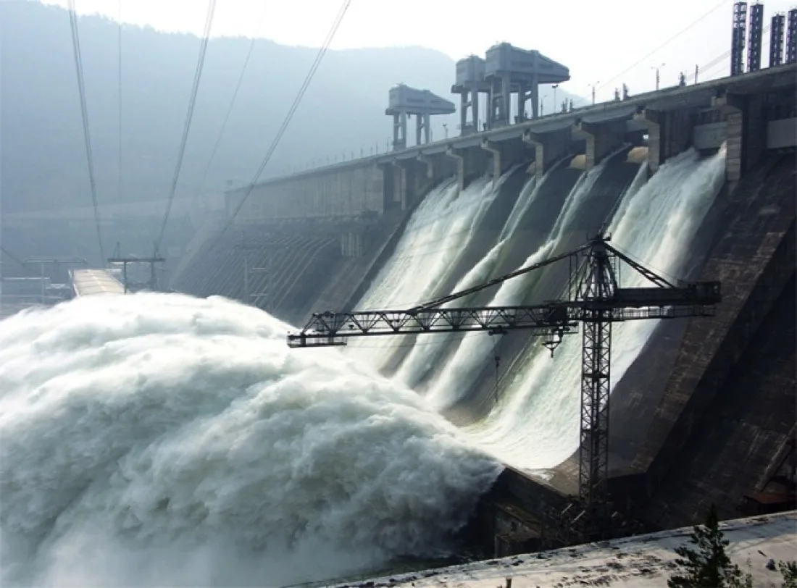
Renewable and reliable togetherWater held behind the dam is a gravitational store that can be released exactly when demand arrives. Renewable and reliable in the same resource is unusual, and it is the point to reach for whenever a question asks about reliability. Credit: Denis Belevich, via Wikimedia Commons.
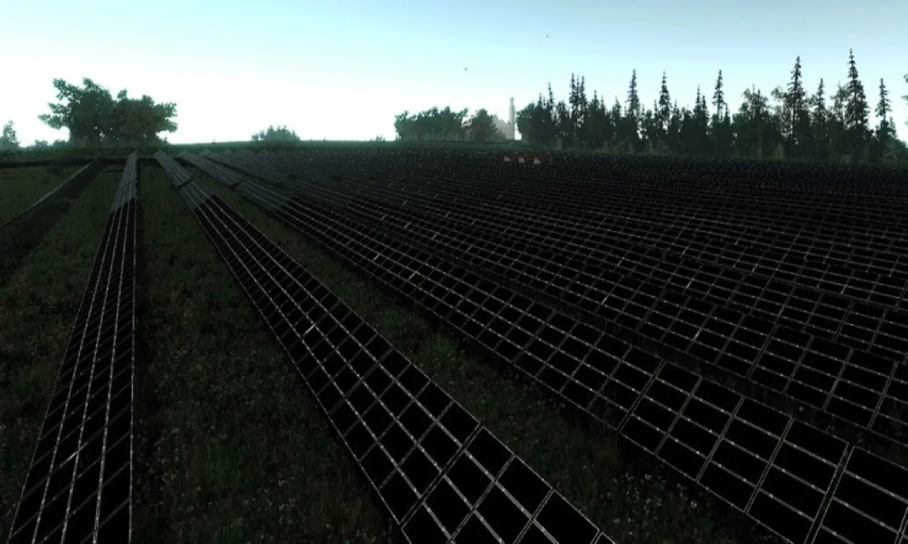
The same resource, generating electricityRenewable, with little environmental impact once built, but it generates when the Sun shines rather than when the country needs it. Reliability, not cleanliness, is the weakness to name. Credit: Michael Betke, Flickr.
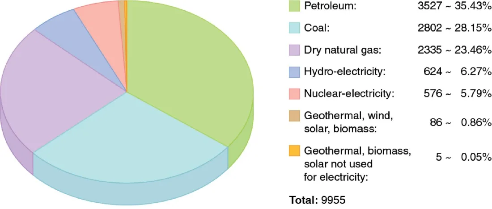
Renewable against non-renewable, by scalePetroleum, coal and gas together take roughly seven eighths of the total, with every renewable sharing what is left. The data is from 2006 and renewables have grown considerably since, so use the shape and not the percentages. Credit: KVDP.
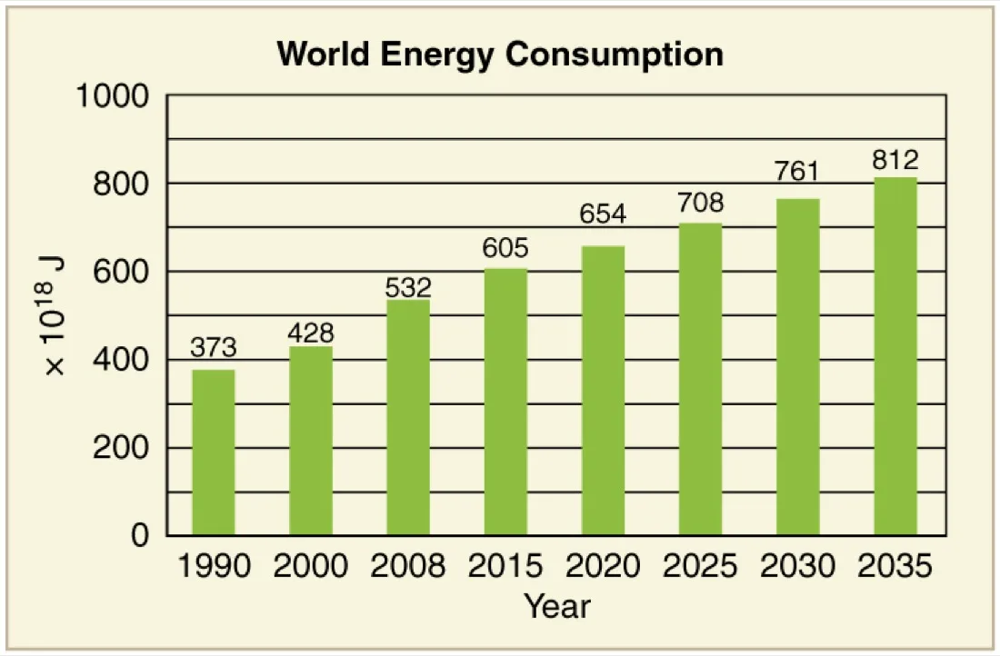
Explaining patterns and trendsDemand climbs decade on decade, which is why changing resources is harder than it sounds: a new resource has to cover the growth before it starts replacing anything. Questions on trends are asking you to read a graph like this one and say why.
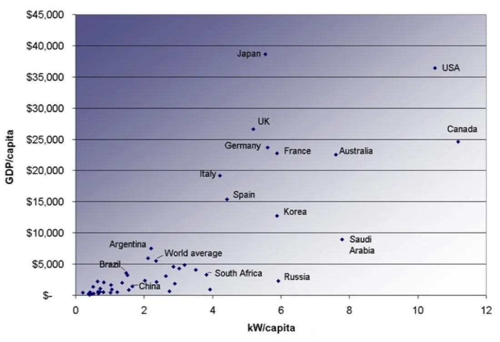
Where the politics comes inRicher countries use more energy per person, with few exceptions. Science can identify the environmental problem, but political, social, ethical and economic considerations decide what is done about it. That last sentence is a specification statement, and this is its figure.